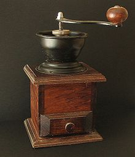

Priprava
Za pripravo napitka iz kavovega zrnja je le-to potrebno ustrezno pripraviti. Zrnje se obere in sortira, nato pa sledi vrsta procesov, ki vodijo do grenke in aromatične pijače.
Praženje Večina kave se proda pražene. Manjši delež se proda v nepraženem stanju kot zelena kava, pred pripravo pa jo je treba obvezno določen čas pražiti. Prav praženje najbolj vpliva na okus in aromo napitka, zrno pa se spremeni tako fizično kot kemično. S praženjem zrna izgubijo na teži, saj iz njih s procesom praženja izpari voda, s čimer se spremeni tudi gostota zrnja.
Mletje in priprava Pred pripravo je potrebno kavna zrna zmleti ali streti. Za to se lahko uporabljajo ročni mlinčki, ki zrnje strejo med zobci posebej oblikovanih zobatih kolesc. Druga metoda je mletje kave v električnih kavnih mlinčkih, ki s pomočjo hitro vrtečega rezila kavno zrnje nareže v fin prah. Tretja metoda je uporaba terilnice, v kateri kavna zrna stolčemo v prah. Finost kavnega prahu je odvisna od načina priprave kave.
